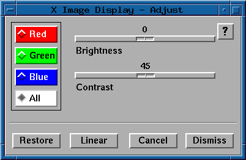

5.3.1 Adjust
The adjust mapping function allows the user to interactively
adjust the brightness and contrast of the displayed image.
The brightness and contrast sliders are used to adjust the
brightness and the contrast. The ability to restore the original
mapping, load a linear mapping and individually adjust
the red, green, and blue bands, also exists.

The red, green, blue, and all radio buttons allow
the user to select which of the mapping components to adjust.
Each displayed image has three separate mapping components,
one for the red, one for the green, and one for the blue portion
of the mapping.
- Brightness and Contrast Sliders:
- These sliders represent an offset percentage and a slope to be applied
to the image data. Therefore, a brightness of 0 (i.e., add 0% of the
maximum brightness to each pixel) and a contrast of 45 degrees (i.e.,
multiply each pixel by the slope of 45 degrees) results in a linear
mapping.
- Red:
- When selected, only the red component of the mapping will be
adjusted. The green and blue components will not be changed.
- Green:
- When selected, only the green component of the mapping will be
adjusted. The red and blue components will not be changed.
- Blue:
- When selected, only the blue component of the mapping will be adjusted.
The red and green components will not be changed.
- All:
- When selected, all components of the mapping will be adjusted equally.
This is the default.
- Restore:
- Reload the mapping that was applied to the image when the adjust
function was initiated.
- Linear:
- Load a linear or identity mapping.
- Cancel:
- Close the adjust panel without saving the current adjusted mapping. The
current mapping is not removed from the image, but other functions
(such as Cursor) will have no knowledge of the mapping.
- Dismiss:
- Close the adjust panel and saves the current adjusted mapping. This does
not save the mapping permanently. It only indicates that other functions
(such as Cursor) will now be aware of the mapping.